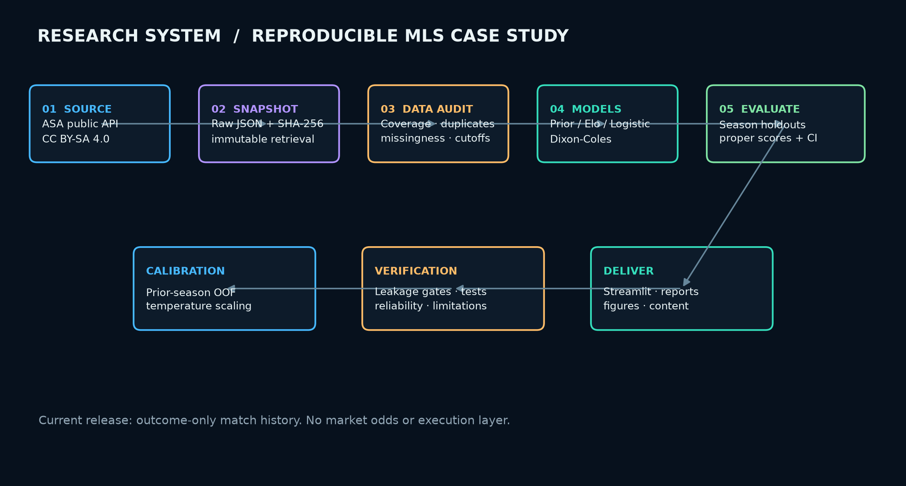
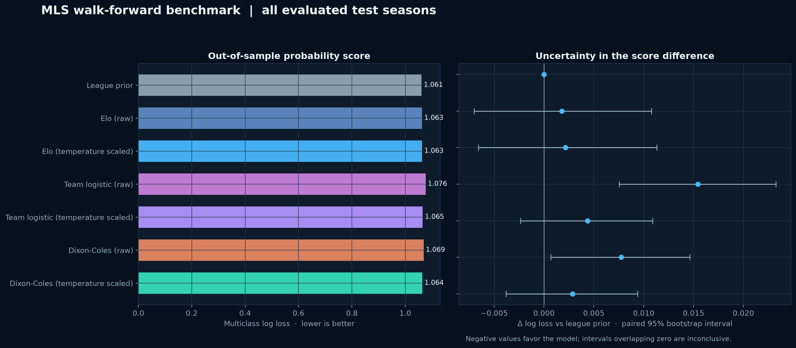
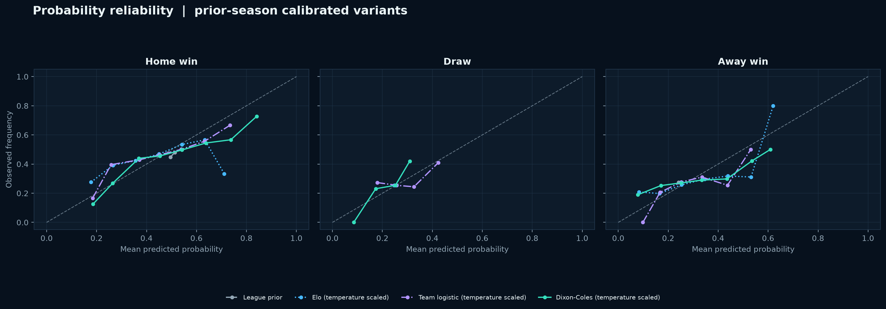
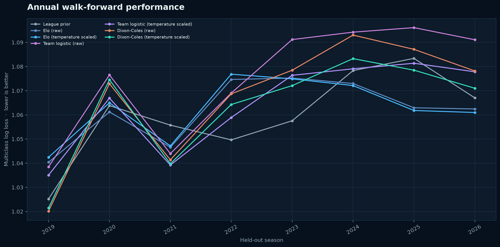

Sports Quant Lab
A reproducible MLS soccer forecasting study built around probability quality, walk-forward evidence, and explicit data limits.
League prior recorded the lowest aggregate held-out log loss in this run: 1.0609 over 3,641 matches in test seasons 2019, 2020, 2021, 2022, 2023, 2024, 2025, 2026. Its paired match-bootstrap difference versus the league-prior baseline was +0.0000 (95% interval +0.0000 to +0.0000). All 6 fitted variants had higher aggregate log loss than the league prior. Paired 95% intervals exclude zero for Dixon-Coles (raw), Team logistic (raw). This is a historical sample result, not a claim of durable future edge, market outperformance, or betting profitability.
What the study tests
Four forecast families are compared: a league outcome prior, Elo ratings, regularized team-identity logistic regression, and a Dixon-Coles goal model. Each test season is held out as a whole and uses only earlier-season results for fitting. Temperature scaling uses temporal out-of-fold forecasts from earlier seasons.

Benchmark and uncertainty
Proper scores assess probabilistic forecasts; accuracy alone can hide poor confidence estimates. The chart reports log loss and paired-bootstrap intervals for the difference from the league prior.

Calibration and stability


Data and responsible claims
The source is the American Soccer Analysis public API, retrieved 2026-11-26 and licensed under CC BY-SA 4.0. The study has results and team IDs, but no timestamped market odds. No market edge, betting return, or arbitrage claim is made.
The API exposes current records and last_updated_utc but no historical point-in-time versions. The experiment verifies season-level train/test separation; it cannot rule out every historical record revision. This is a research case study, not betting advice.
Results
| Model | Log loss | Brier | Accuracy | Top-label ECE |
|---|---|---|---|---|
| League prior | 1.0609 | 0.6402 | 47.1% | 0.037 |
| Elo (raw) | 1.0627 | 0.6410 | 45.2% | 0.021 |
| Elo (temperature scaled) | 1.0631 | 0.6413 | 45.2% | 0.027 |
| Dixon-Coles (temperature scaled) | 1.0638 | 0.6416 | 46.4% | 0.028 |
| Team logistic (temperature scaled) | 1.0653 | 0.6425 | 46.3% | 0.017 |
| Dixon-Coles (raw) | 1.0687 | 0.6448 | 46.4% | 0.047 |
| Team logistic (raw) | 1.0763 | 0.6491 | 46.3% | 0.052 |